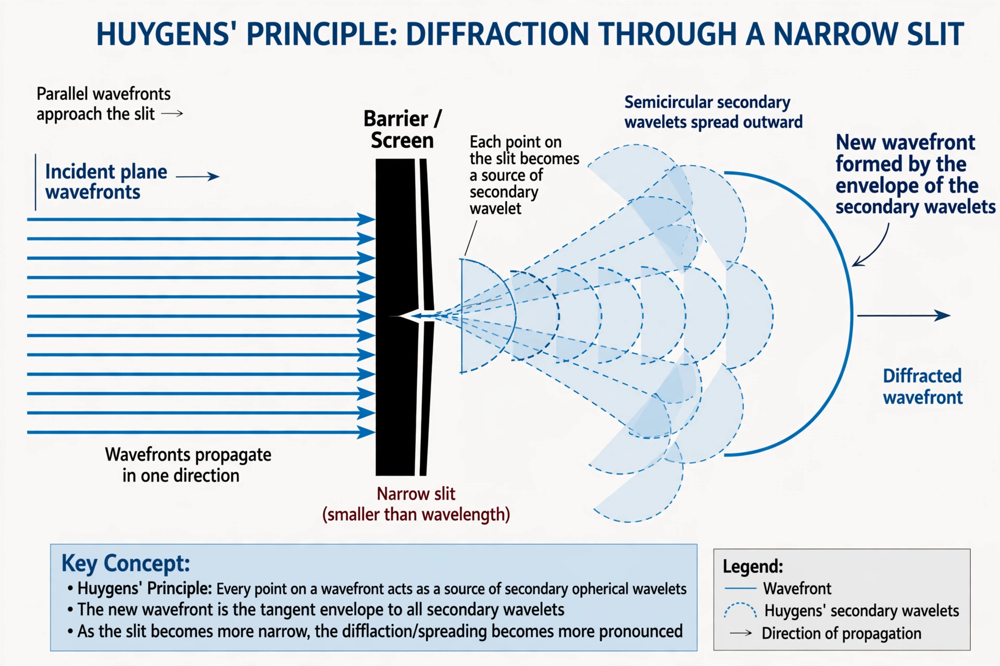

| Field | Wave optics |
|---|---|
| Proposed | Christiaan Huygens (1690); Augustin-Jean Fresnel (1816) |
| States | Every point on a wavefront is a source of secondary wavelets |
| Explains | Diffraction, refraction, reflection |

The Huygens–Fresnel principle (named after Dutch physicist Christiaan Huygens and French physicist Augustin-Jean Fresnel) is a method of analysis applied to problems of wave propagation both in the far-field limit and in near-field diffraction as well as reflection. It states that every point on a wavefront is itself the source of spherical wavelets, and the secondary wavelets emanating from different points mutually interfere; the sum of these wavelets forms the wavefront at a later time.
Huygens proposed the construction in his Treatise on Light (1690) to explain reflection and refraction, but could not explain diffraction convincingly. In 1816 Fresnel supplemented Huygens' idea with his concept of coherent interference of the secondary wavelets, yielding quantitative predictions — triumphantly confirmed when the bright "Poisson spot" predicted by the theory at the center of a circular obstacle's shadow was actually observed.
The principle underlies the analysis of diffraction through apertures and around obstacles, the operation of a diffraction grating, and the formation of the Airy disk in imaging systems. Gustav Kirchhoff later placed it on a firmer mathematical footing from the wave equation, and Richard Feynman recast it in the path-integral picture, in which light explores all paths with interfering phases.
In quantum electrodynamics the principle is subsumed by the propagation of probability amplitudes; for classical waves it remains a powerful and accurate computational tool in optics, acoustics and seismology.
From Wikipedia, the free encyclopedia. Recreated from memory.